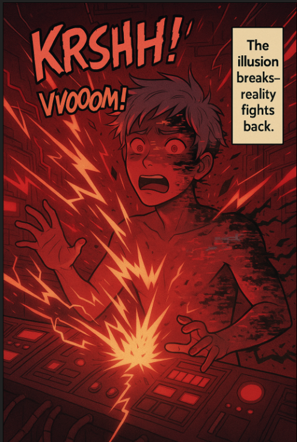

Short stories
Buffers of Death
Every civilization invents tools faster than it invents wisdom. These stories live in the narrow space between brilliance and self-inflicted deletion, and tries to learn from them.

Existential risk, with teeth
Collapse is rarely dramatic at first.
The buffers are cultural, biological, technological, and philosophical safeguards against death. In plain human: they are the algorithms that allow individuals and species continue their own existence.
These stories are suspenseful and sly: an invitation to think about your risk bubble without turning the page into a lecture hall.
Reading path
Featured transmissions
The Last Safety MarginA society discovers that the buffer worked perfectly until someone optimized it for quarterly glory.Risk
Entropy's Friendly ReminderA cosmic systems story about decay, denial, and why warnings are rarely appreciated on schedule.Satire
When the Loop Looked BackElara studies a recurring failure pattern and finds the same arrogance wearing different costumes.Cosmic